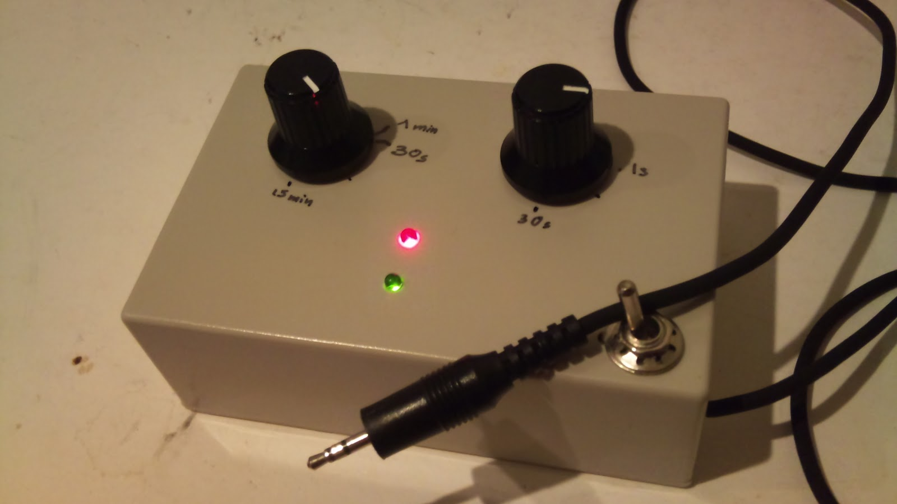

Why why why oh why ?
Well, I'm not proud but I inspired (stole?) from a young guy I met at the Make : Tokyo Meeting 05 (in 2010).
His wonderful time lapse video are available here http://www.youtube.com/user/OkometubuY so I would like to all credits being given to him for initial idea.
You can find his circuit distributed by Switch-science , as the BluRay DVD of the Timelapses videos.
Update: damned, found a guy who did nearly all ... but mine will be better :P
- http://www.arduino.cc/cgi-bin/yabb2/YaBB.pl?num=1165863936
- http://blog.makezine.com/archive/2008/06/how_to_timelapse_photos_w.html
- The smallest possible http://www.diyphotography.net/the-smallest-intervalometer-in-the-world
Time lapse : set your camera pointing to an interesting spot, and take one picture every minute for instance. Combine all these pictures in one movie and that still view you had become animated. Clouds move, sun moves, people and cars pass by, ... and by night with a little long exposure, it's even more nice.
Check here for tricks on how to compile all the still images in one movie (and more!) (or here ).
That young guy made a little system that you strap on the lens, that triggers the camera by sending IR command. Easy, and adaptable to any (or so) camera! That is a great idea I think. I was about to buy one from him (he was selling the set of components to solder yourself for like 2000 JPY), when the geek within me spoke and said "hum, you can make your own version that could also control exposure length and without that IR/every camera compatible stuff"... and it was the strongest.
Goal :
- Connect on the pear jack connector of the camera , CANON only (Nikkon guys, make your own, I'm a CANONist)
- With 2 pots, control time between 2 pictures and picture exposure (since we use the pear connector, we can be veeeeery long)
- Work on battery (3 AA battery)
- A glimps of bling bling when shooting (red led on/off, green is shoot in progress)
- No focus control (fixed on camera), just the exposure duration
- Exposure up to 30 sec and time between 2 pictures is up to 15 minutes.
- NB: these can be very easily changed in the code when the uC "interpretes" the reading of the pots
//duration are divided by 2, since all the timing is compiled for a 16MHz running Arduino but runs on a on-chip 8MHz oscillator //DURATION: max = 1024 = 1 sec => x900 = max is 15 min mDuration = 900 * analogRead(PINDURATION) /2; //EXPO: max = 1024 = 1 sec => x30 = max is 30 sec mExpolen = 30 * analogRead(PINEXPOLEN) /2;
Technical points :
- Use a ATmega 328 (cant use ATTiny 2313 as is, since we need 2 ADC for the potentiometer values)
- Use optocoupler/photocoupler for isolating circuit and camera trigger
- uC runs on its own oscillator, so spare the quartz and capacitors (we don't need speed or high precision here)
- Programming the uC without using the bootloader is done like this :
- Build using the button "Verify" (not upload) in the Arduino IDE
- Find the .hex file (in /tmp/build.????????????????//)
- Put the uC in the Arduino (don't break the legs, check for the correct direction, mind doing the power on, ...)
- Plug the programmer on the ISP plug (my case, a Pololu programmer )
- Run the command you will find here under
- Et voila.
#!/bin/bash avrdude -c avrispv2 -p m328p -P /dev/ttyACM0 -U flash:w:./ArdTimeLapse.cpp.hex:i

Realisation
(2010-07-22) One evening of work and it was all done. A few adjustments on the software and a couple additional hours later it was ok.
Schema
Sorry, I'm a real beginer to Eagle ... anyway, schema should be understandable even if it is not the final.Code
No special trick or point of interest. Just note that it is built for a Arduino running at 16MHz and since it runs on the internal oscillator at 8MHz, it runs twice "slower". I just take it in account when reading the potentiometers. I build and the upload using the arduino board and the pololu programmer.ArdTimeLapse.pde
Howto make a video from still images
Step 0 : the photos
- Force the white balance
- Force the focus (manual)
- Check ISO
- Force exposure length (or bo in BULBE mode and let the ardTimeLapse do it)
- Put the camera in a safe place where it won't move
- Put the settings to "small" images with high quality
- Usual stuff: check the battery, make sure you have free space on the card,...
Step 1 : rename the images
We will use ffmpeg that needs images with number starting from 1. So use this script for renaming:#!/bin/bash for i in *.JPG do j=`printf "img_%d.JPG\n" $x` mv $i $j #echo $j x=$((x%201)) done
Step 2 : resize
Even in low size the pictures of my Canon 450D are way too big, like 2000%20 by something like that. Lets batch resize it using ImageMagick.mogrify -resize 800 *.JPG
Step 3 : make a movie
Using ffmpeg, run that command line:ffmpeg -f image2 -r 25 -i img_%d.JPG video.mpg
Pictures
The box, left pot is lapse and right is exposure length. Red light is the "on" led, green is the "shoot in progress".
System works on 3 AA battery so should live long. Circuit is very simple with just the ATmega328, a few resistors and a photocoupler.
The 4 leg a the botom of the pcb is the photocoupler. You can see, very simple circuitry.